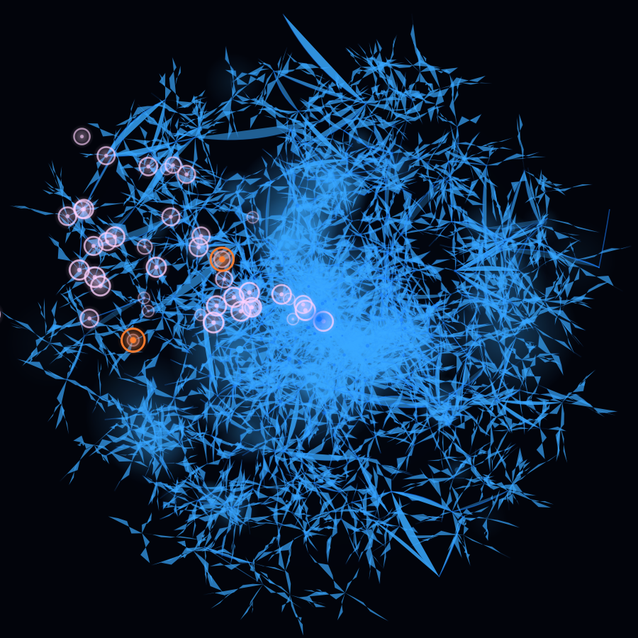

Data Brain
hỏi đáp có trích dẫn · Claude + chỉ mục nội bộ
● Claude sẵn sàng
◆ 3 nguồn đã trích
Dựng báo cáo KV-OP
Chế độ
💬 Ask
🔍Find Docs
📝Make Report
🔬Diagnose
▣Quick Card
⚙Work Pack
📈Trend Data
Phiên gần đây
Ngưỡng rung IDF
Bơm tuần hoàn — chức năng
Chuẩn bị thay bearing IDF-A
Sự cố mất chân không 07/2026
💬 Ask · phiên 13.08.2026 · 4 câu hỏi
Ngưỡng rung của IDF là bao nhiêu, và số nghiệm thu lúc bàn giao?
Claude
Ngưỡng bảo vệ rung của quạt IDF lấy theo ISO 10816-3, nhóm máy Group 1 trên móng cứng HNC-50056 §7.4.2:
Alarm4.5 mm/s RMS
Trip7.1 mm/s RMS
Trễ trip3 s · 2-out-of-2
Nghiệm thu 11/20242.8 DE / 3.1 NDE mm/s
Logic bảo vệ bỏ qua tín hiệu khi damper đang đóng HNC-50061 §4.2, nên giá trị đọc lúc khởi động không kích trip.
Số nghiệm thu 2.8 / 3.1 mm/s nằm dưới alarm khá xa — nếu
hiện tại đo được trên 5 mm/s thì đó là suy giảm thật theo thời gian,
không phải sai số đo.
Hỏi tiếp về IDF, hoặc bấm một chế độ bên trái…
Enter

260 khớp · 3 nguồn
Lot 3 AB DWG (1,982) ·
12_O&M (1,835) ·
Lot 4 AB DWG (1,786) ·
Lot 2 AB DWG (848) ·
11_Training (717)
Nguồn đã trích · 3
VP1-C-L3-G-HNC-50056
tr. 214
7.4.2 — Alarm 4.5 mm/s RMS, trip 7.1 mm/s RMS theo ISO 10816-3.
✓ đã đối chiếu với DB
VP1-C-L3-I-HNC-50061
tr. 8 · quét
4.2 — trip sau trễ 3 giây, bỏ qua khi đóng damper.
⚠ bản quét OCR — nên xem bản gốc
VP1-C-L3-F-HNC-50210
tr. 3
Nghiệm thu 11/2024 — 2.8 / 3.1 mm/s ở đầy tải.
✓ đã đối chiếu với DB
Dựng báo cáo KV-OP từ 3 nguồn